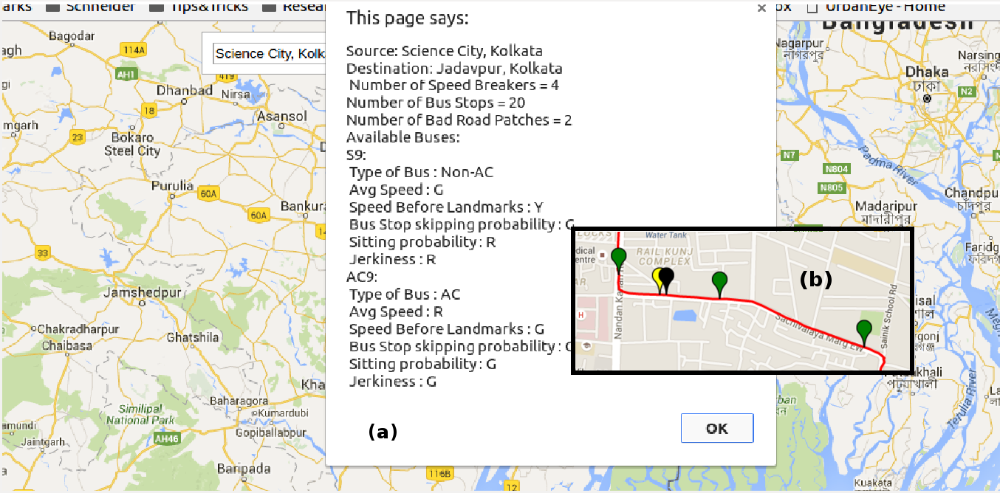

Multiple challenges had to be tackled to develop CrowdMap. We list here the major ones;
Developing an intelligent data logging system
Automatically sense route signatures or landmarks like speed breakers, turns, etc
Generate the complete trajectory of the bus using only inertial sensor data
Discover a unique bus route on the map
Contributions
We propose a crowdsource based solution, CrowdMap that tackles the problems discussed earlier. CrowdMap seamlessly discovers the bus routes, and embeds the annotated route information on the city map. The major contributions of CrowdMap are;
A data collection module that uniquely identifies the user is in a bus and logs required data.
Detects and tags landmarks
Generates a trajectory of the route travelled by the user
Annotate bus routes on map alongwith comfort level information

CrowdMap UI to display summary details: (a) Summary, (b) Inset: Annotation of speed breakers (Yellow), bus stops(Green) and bad road patch (Black) on the bus route